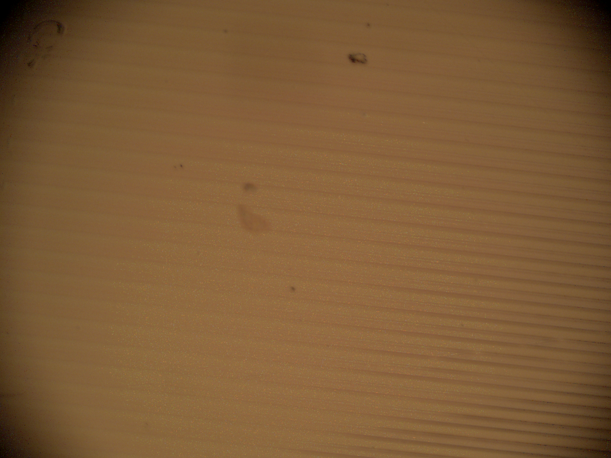
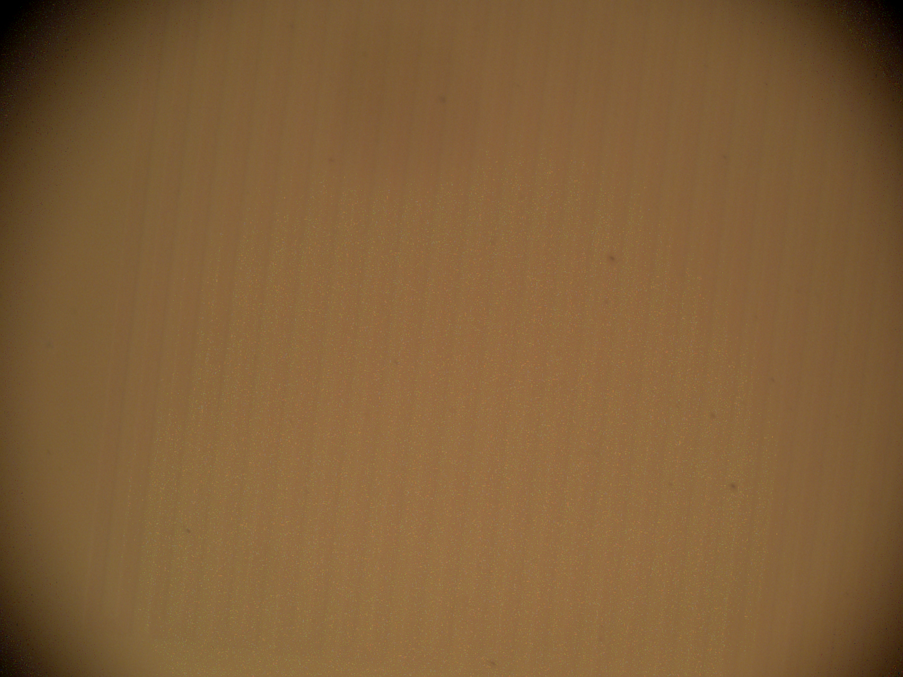
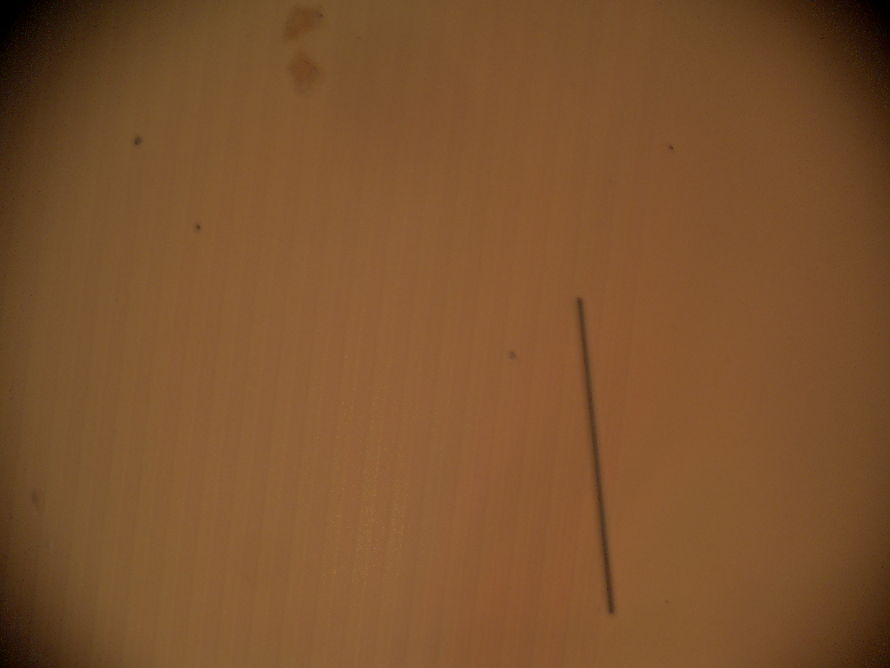
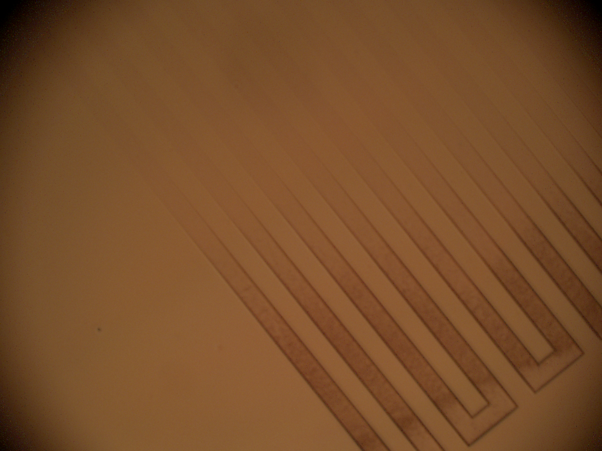
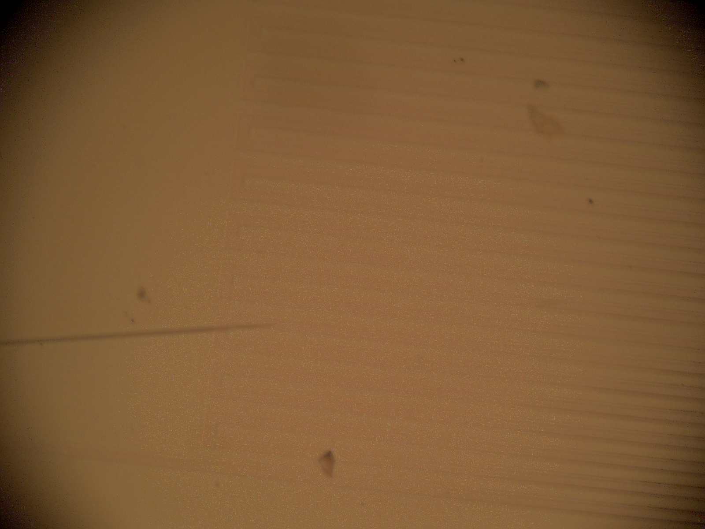
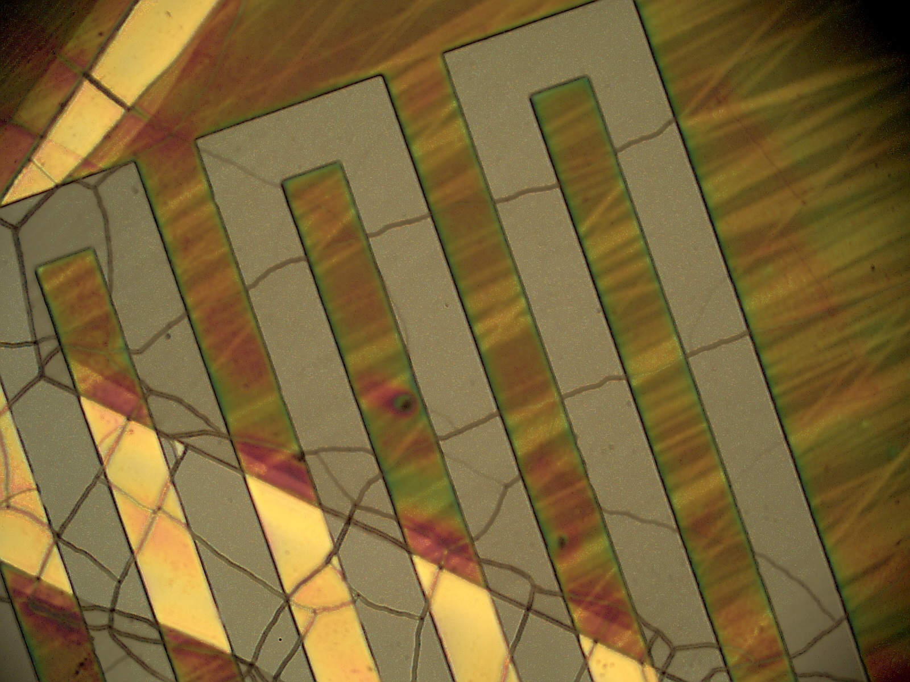
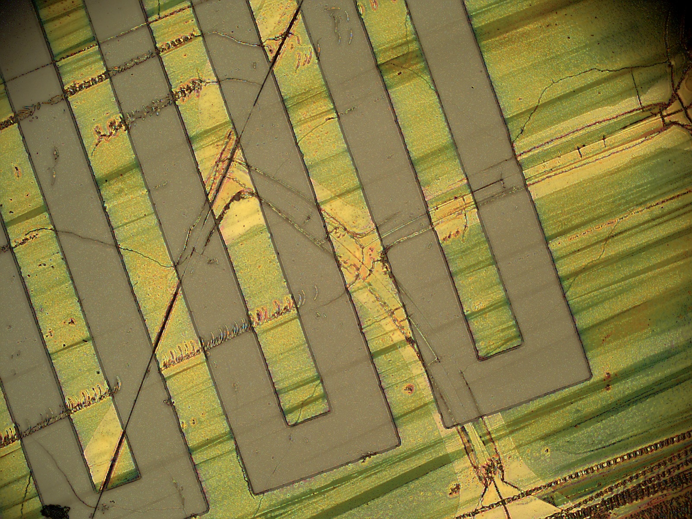
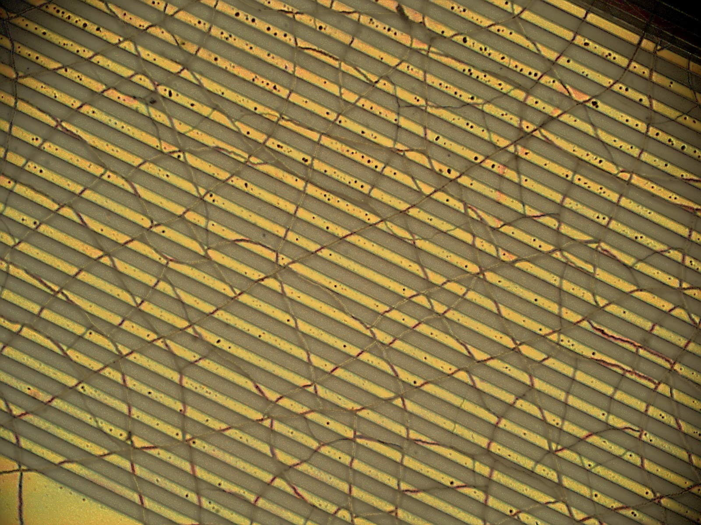
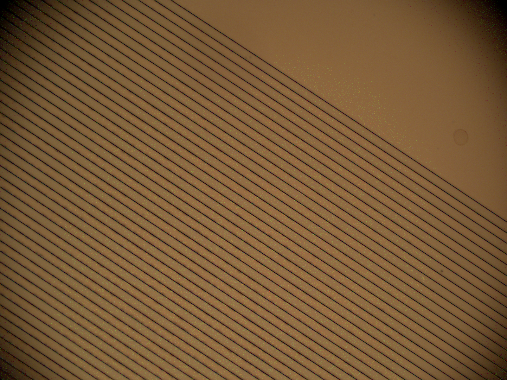
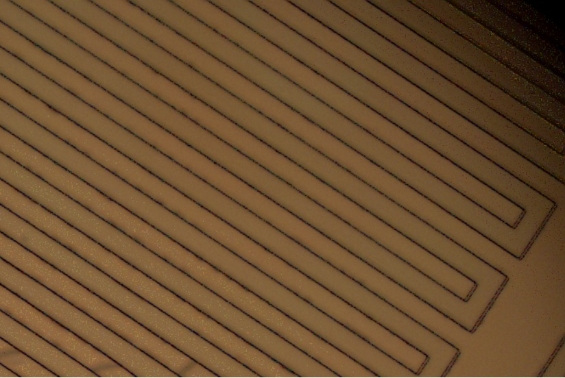

Photoresist Adhesion Optimization
on Hydrophobic PDMS
Surface Activation | DOE Plasma Treatment | Failure Analysis
📅 Period: 2020 – 2021
🧪 Key Techniques: O₂ Plasma Treatment (RIE) | AZ 1518 Positive Resist | Hydrophobic Surface Activation
🎭 Role: Sole process developer - Designed and executed DOE, characterized failures, optimized parameters
The Problem: Photoresist Delamination on PDMS
PDMS (polydimethylsiloxane) is inherently hydrophobic with a water contact angle of ~110-120°. This hydrophobicity causes poor adhesion of aqueous-based photoresists, leading to resist peeling, delamination, and pattern transfer failure during development. This was a critical bottleneck for fabricating metal patterns on PDMS for flexible sensors.





Root Cause Analysis
- Hydrophobic Surface: PDMS has low surface energy (∼20 mJ/m²) vs. photoresist surface tension (∼30-40 mJ/m²) → poor wetting
- Low Adhesion: No chemical bonding between PDMS and resist
- Developer Attack: Aqueous developer penetrates between resist and substrate, causing lifting
- Mechanical Stress: Spin coating and developing create shear forces that lift poorly adhered resist
Design of Experiments (DOE) Approach
Factor 1
Plasma Power (W)
50W → 100W → 150W
Factor 2
Chamber Pressure (mTorr)
200 → 400 → 600 mTorr
Factor 3
O₂ Flow Rate (sccm)
40 → 60 → 80 sccm
Factor 4
Treatment Time (sec)
30 → 60 → 120 → 180 sec
Experimental Matrix (Selected Runs):
| Run | Power (W) | Pressure (mTorr) | O₂ Flow (sccm) | Time (sec) | Result |
|---|---|---|---|---|---|
| 1 | 50 | 400 | 60 | 30 | ❌ Partial adhesion |
| 2 | 100 | 400 | 60 | 30 | ❌ Still peeling |
| 3 | 150 | 400 | 60 | 30 | ⚠️ Too aggressive |
| 4 | 100 | 200 | 60 | 60 | ⚠️ Partial improvement |
| 5 | 100 | 400 | 60 | 60 | ⚠️ Better but uneven |
| 6 | 100 | 600 | 60 | 60 | ❌ Inconsistent |
| 7 | 100 | 400 | 40 | 90 | ✅ Good adhesion |
| 8 | 100 | 400 | 60 | 90 | ✅ Optimal result |
| 9 | 100 | 400 | 80 | 90 | ⚠️ Slight over-treatment |
Failure Mode 1: No Plasma Treatment (Control)
Failure Mode 2: Excessive Plasma Treatment
Too much plasma treatment (high power, long time) creates excessive surface activation, causing the photoresist to adhere too strongly, making it impossible to remove even after development. This results in:
- Resist residue in exposed areas (should have been removed)
- Poor pattern fidelity
- Difficult lift-off
- Surface cracking/roughening



Process Development: Finding the Sweet Spot
Through systematic DOE, the optimal plasma treatment parameters were identified to achieve strong resist adhesion without over-adhesion.
Key Findings:
- Power: 100W provided the best balance (50W insufficient, 150W too aggressive)
- Time: 90 seconds was optimal (30-60s insufficient adhesion, 120s+ over-treatment)
- Pressure: 400 mTorr gave most uniform treatment across wafer
- O₂ Flow: 60 sccm optimal for uniform plasma distribution
Success: Clean Patterned Resist on PDMS
After rigorous process development and DOE optimization, clean, well-adhered photoresist patterns were achieved on hydrophobic PDMS substrates.


Optimized Process Flow
Step 1: PDMS Preparation
Spin-coat PDMS (10:1 ratio) on Si wafer → Cure at 80°C for 12h
Step 2: O₂ Plasma Treatment (OPTIMIZED)
MARCH RIE System: 100W | 400 mTorr | 60 sccm O₂ | 90 seconds
Step 3: Immediate Resist Coating
Process within 30 minutes of plasma treatment (surface activation decays over time)
Step 4: Soft Bake
110°C for 70 seconds
Step 5: UV Exposure
OAI 800 Mask Aligner, 80 mJ/cm²
Step 6: Development
AZ 300 MIF, 60 seconds
Key Learnings & Insights
- Surface energy is critical: Hydrophobic PDMS requires surface activation for resist adhesion
- There is an optimal window: Too little treatment → peeling; too much → resist residue
- Time sensitivity: Treated PDMS surface re-hydrophobizes over time (plasma treatment effect decays within hours)
- DOE is powerful: Systematic variation of power, time, pressure, and flow identified optimal parameters
- Characterization is key: Optical microscopy and profilometry essential for failure analysis
Equipment Used
- MARCH RIE System (O₂ Plasma)
- Headway Spin Coater
- Despatch Oven (PDMS Curing)
- OAI 800 Mask Aligner
- Hotplates (Soft Bake)
- Develop Deck (AZ 300 MIF)
- Olympus Optical Microscope
- Alpha Step Profilometer
Skills Acquired
Downloads
- DOE Experimental Matrix (Excel)
- Optimized Plasma Treatment Protocol (PDF)
- Failure Analysis Guide (PDF)
Process Comparison
| Condition | Resist Adhesion | Pattern Fidelity | Lift-Off Ease | Verdict |
|---|---|---|---|---|
| No Plasma Treatment | ❌ Very Poor | ❌ Complete Failure | N/A | Unacceptable |
| Under-Treatment (30-60s) | ⚠️ Partial | ⚠️ Peeling at edges | ✅ Easy | Poor |
| Optimal (90s) | ✅ Excellent | ✅ Sharp/Uniform | ✅ Clean | Optimal |
| Over-Treatment (120-180s) | ❌ Too Strong | ❌ Residue/Scum | ❌ Difficult | Unacceptable |
Connection to My Research
This process development directly enabled multiple projects:
- Flexible Pressure Sensors: Reliable metal patterning on PDMS for stretchable electrodes
- Dual-Mode Sensors: Clean lift-off for interdigitated electrodes
- Wearable Devices: PDMS-based flexible substrates for skin-mounted sensors
Conclusion
This project systematically addressed the critical challenge of photoresist adhesion on hydrophobic PDMS substrates through O₂ plasma surface activation. Using Design of Experiments (DOE) methodology, four parameters (power, pressure, O₂ flow, time) were optimized. Key findings include: (1) no plasma treatment results in complete resist delamination during development; (2) under-treatment (30-60s) causes partial peeling; (3) over-treatment (120s+) leads to resist residue and lift-off failure; (4) optimal parameters are 100W power, 400 mTorr pressure, 60 sccm O₂ flow, 90 seconds. The optimized process yields clean, well-adhered resist patterns with sharp feature edges and excellent pattern fidelity. This work demonstrates systematic problem-solving using DOE, failure analysis, and process optimization — critical skills for semiconductor process engineering roles.